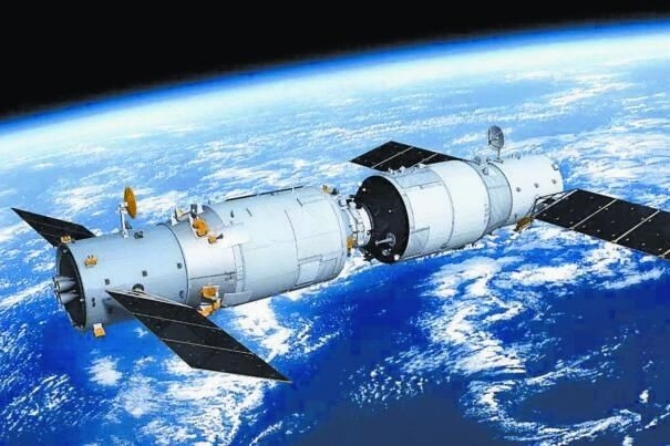
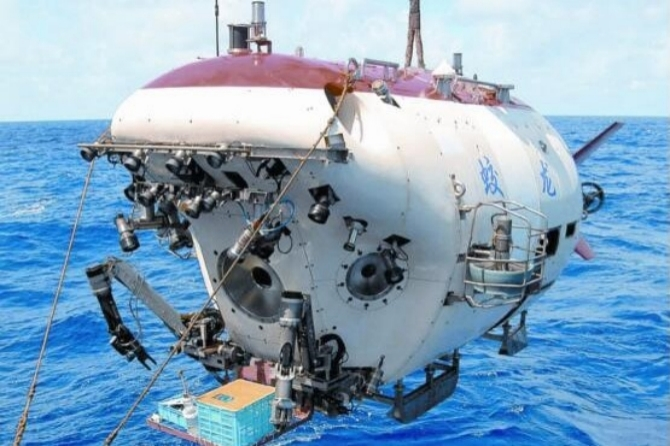
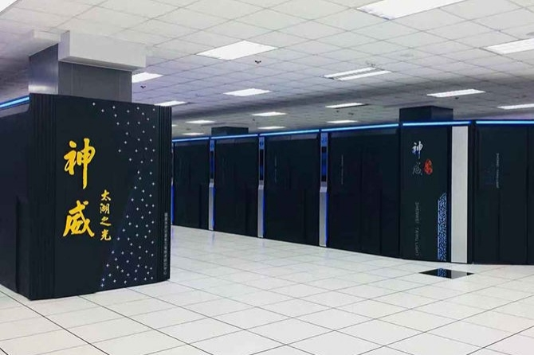
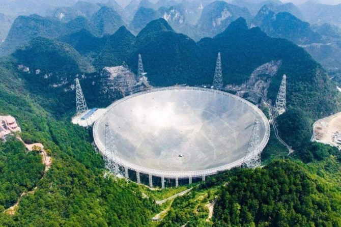
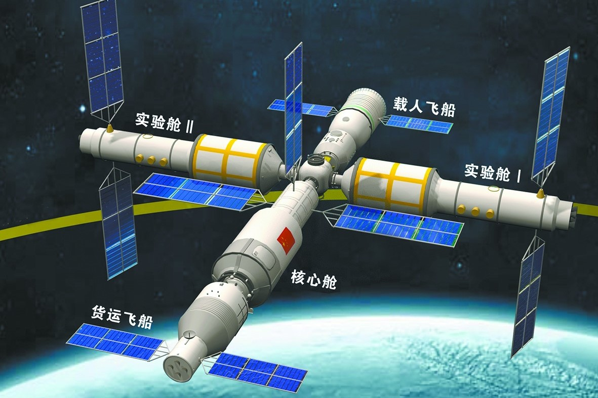
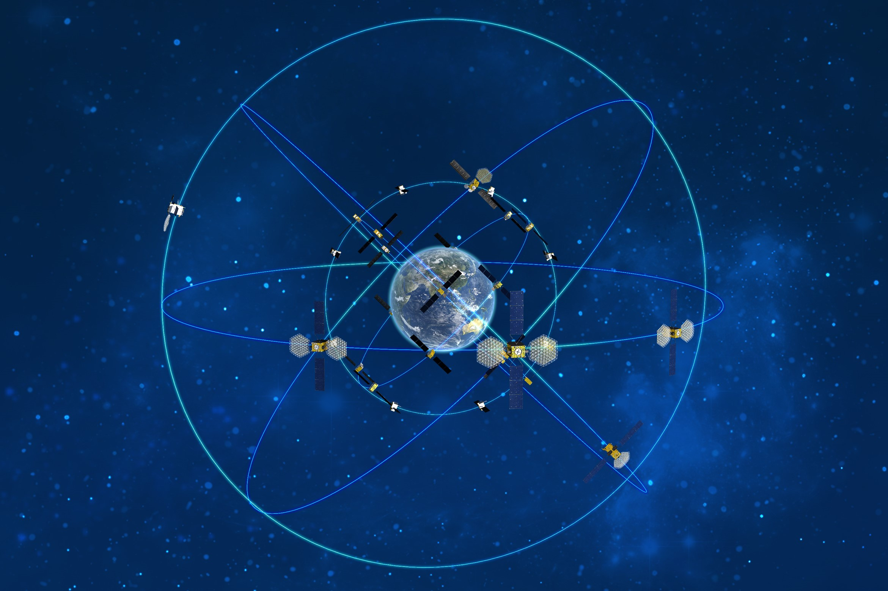

回望中国共产党的百年征程，正是无数共产党人，以坚强的信念、坚定的信仰、豪迈的气概，撑起了百年大党的铮铮脊梁，铺下了民族复兴之路的块块基石。
百年来，中国在科技领域取得巨大进步，在各个领域均出现世界前列的成果：载人航天，一次次刷新“中国高度”；蛟龙号探海，不断拓展“中国深度”；世界最大单口径射望远镜，造就一流“中国视野”；超级计算机，挑战“中国速度”；世界首颗量子科学卫星“墨子号”，开启全球化量子通信；中国大数据体系，让物联网、人工智能领先世界。
|  |  |
| 天舟一号 | 蛟龙号 |
|  |  |
| 超级计算机——神威 | 射电望远镜——中国天眼 |
21世纪，科技创新对社会经济持续增长、产业结构优化调整的贡献影响愈发明显，党和政府根据中国科技发展的实际情况和面临形势，正式提出了创新型国家的发展战略。2006年，党中央国务院先后出台《国家中长期科学和技术发展规划纲要（2006—2020年）》《关于发挥科技支撑作用促进经济平稳较快发展的意见》《关于加快培育和发展战略性新兴产业的决定》等文件，为今后的科技创新工作提供了明确、完善的指引方针，努力建设创新型国家。
中国航天
天问一号
天问一号，是由中国航天科技集团公司下属中国空间技术研究院总研制的探测器，负责执行中国第一次自主火星探测任务。天问一号于2021年2月到达火星附近，实施火星捕获。2021年5月择机实施降轨，着陆巡视器与环绕器分离，软着陆火星表面，火星车驶离着陆平台，开展巡视探测等工作，对火星的表面形貌、土壤特性、物质成分、水冰、大气、电离层、磁场等科学探测，实现中国在深空探测领域的技术跨越。深空探测将推动空间科学、空间技术、空间应用全面发展，为服务国家发展大局和增进人类福祉作出更大贡献。
2021年6月11日，中国国家航天局举行了天问一号探测器着陆火星首批科学影像图揭幕仪式，公布了由“祝融号”火星车拍摄的着陆点全景、火星地形地貌、“中国印迹”和“着巡合影”等影像图。首批科学影像图的发布，标志着中国首次火星探测任务取得圆满成功 。6月27日，国家航天局发布我国天问一号火星探测任务着陆和巡视探测系列实拍影像。其中，祝融号火星车火星表面移动过程视频是人类首次获取火星车在火星表面的移动过程影像。
天问一号着陆过程（模拟）
天宫空间站
天宫空间站是我国计划中的一个空间站系统。预计在2022年前后建成。空间站轨道高度为400~450公里，倾角42~43度，设计寿命为10年，长期驻留3人，总重量可达180吨，以进行较大规模的空间应用。1992年，中国政府就制定了载人航天工程“三步走”发展战略，建成空间站是发展战略的重要目标。
天宫号空间站的基本构型由一段核心舱和两段实验舱组成“Ｔ”字体，两段实验舱分别长期停靠在核心舱的左右两端，货运飞船以及载人飞船分别对接于核心舱前后两端。
核心舱：“天和号”核心舱，由长征五号乙从文昌发射。取名自天枢与太和，寓意天地人和。舱外设置一架大型机械臂，前端包括一段六接口的节点舱，同时充当空间站进出太空的主要气闸舱。
实验舱I：“问天号”实验舱，由长征五号乙从文昌发射，控制与实验应用舱，舱外设置一架小型机械臂。
实验舱II：“梦天号”实验舱，由长征五号乙从文昌发射，专用应用舱。空间天文台：“巡天号”空间天文台。
货运飞船：“天舟号”货运飞船，由长征七号从文昌发射。无人货运飞船，用于补给空间站以及废物排除等任务。
载人飞船：“神舟号”载人飞船，由长征二号F从酒泉发射。载人飞船，用于航天员的运输和应急返回等任务。
最近，搭载神舟十二号载人飞船的长征二号F遥十二运载火箭，在酒泉卫星发射中心点火发射。此后，神舟十二号载人飞船与火箭成功分离，进入预定轨道，顺利将聂海胜、刘伯明、汤洪波3名航天员送入太空，飞行乘组状态良好，发射取得圆满成功。
据中国载人航天工程办公室消息，神舟十二号载人飞船入轨后顺利完成入轨状态设置，采用自主快速交会对接模式成功对接于天和核心舱前向端口，与此前已对接的天舟二号货运飞船一起构成三舱组合体，整个交会对接过程历时约6.5小时。8月20日消息，经过约6小时的出舱活动，神舟十二号航天员乘组第二次出舱活动于20日14时33分圆满完成；9月16日神舟十二号载人飞船撤离空间站组合体；9月17日13时30分许，神十二返回舱在东风着陆场安全降落。
北斗卫星导航系统
中国北斗卫星导航系统（英文名称：BeiDou Navigation Satellite System，简称BDS）是中国自行研制的全球卫星导航系统，也是继GPS、GLONASS之后的第三个成熟的卫星导航系统。北斗卫星导航系统（BDS）和美国GPS、俄罗斯GLONASS、欧盟GALILEO，是联合国卫星导航委员会已认定的供应商。
北斗卫星导航系统由空间段、地面段和用户段三部分组成，可在全球范围内全天候、全天时为各类用户提供高精度、高可靠定位、导航、授时服务，并且具备短报文通信能力，已经初步具备区域导航、定位和授时能力，定位精度为分米、厘米级别，测速精度0.2米/秒，授时精度10纳秒。
北斗系统提供服务以来，已在交通运输、农林渔业、水文监测、气象测报、通信授时、电力调度、救灾减灾、公共安全等领域得到广泛应用，服务国家重要基础设施，产生了显著的经济效益和社会效益。基于北斗系统的导航服务已被电子商务、移动智能终端制造、位置服务等厂商采用，广泛进入中国大众消费、共享经济和民生领域，应用的新模式、新业态、新经济不断涌现，深刻改变着人们的生产生活方式。中国将持续推进北斗应用与产业化发展，服务国家现代化建设和百姓日常生活，为全球科技、经济和社会发展做出贡献。
北斗系统具有以下特点：一是北斗系统空间段采用三种轨道卫星组成的混合星座，与其他卫星导航系统相比高轨卫星更多，抗遮挡能力强，尤其低纬度地区性能优势更为明显。二是北斗系统提供多个频点的导航信号，能够通过多频信号组合使用等方式提高服务精度。三是北斗系统创新融合了导航与通信能力，具备定位导航授时、星基增强、地基增强、精密单点定位、短报文通信和国际搜救等多种服务能力。